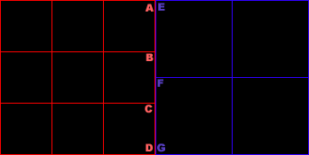
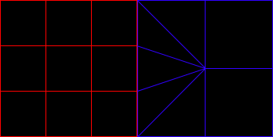
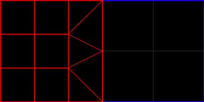

|
N-Patches for Terrain LOD
Question submitted by (09 January 2002)

|
 |
|
 |
| |
Hi, guys! Is somebody there who can help me ?
(I apoligise, my english is probably awful, but I hope you'll be able to
understand me)
I plan to implement a simple terrain rendering engine in my spare time with
DirectX 8. My idea is to use n-patches for terrain LOD generation. Now, be patient and let
me explain what is my problem:
Ok, let's say I know how to load a gray-scale bitmap from a file, generate a
terrain mesh from it, and compute a quadtree for my visibility detection algorithm. My
problem is how to produce various terrain LOD according to the distance from the
camera using n-patches. An obvious solution is for every visible quadtree leaf
to determine it's distance to the observer and then compute the tesslation amount
(number of segments) for that node, using a formula like this:
NumSegments = ((MaxDistance - Distance) * MaxSegments + (Distance - MinDistance) * MinSegments) / (MaxDistance - MinDistance),
where:
Distance - the distance from the quadtree node to the camera,
MinDistance - the distance to the near plane of my view frustum;
MaxDistance - the distance to the far plane of my view frustum;
MinSegments - the number of segments at the farthest distance;
MaxSegments - the number of segments at the nearest distance.
Probably the formula is not correct, but I hope you've got the main idea. So, my
problem is: when rendering adjacent n-patches tesslated with different number of
segments it's most likely to have noticeable seams between them, but I really
have no idea how to avoid these seams. May be there is a better solution than
mine. Have you got any ideas?
Thank you for any suggestions and ideas!
|
|
 |
|
 |
 |
|
|
| |
Boy, it's been a while! The Ask Midnight mailbox was so full of some really
great questions and when I finally popped my head up from my stack of
commitments, I realized I couldn't possibly answer all of the questions in
there. That would be a posting of one answer a day for the next three months!
Considering that many of these responses can take a number of hours (and even a
few days in a few cases), there was simply no way.
So I'm forced to take a spattering of the more recent questions, hoping my
answers will still be of some use to those that have asked them. However, if
you've asked a question in the past and would like a shot at getting it answered
again, just resubmit it with a
note saying it was a resubmission. Those resubmissions will be put at the top of
the Ask MidNight priority list. Of course, the rules still apply for getting a
question answered ([1] I have to know the answer , [2] it has to be a
question that applies to at least a few people, [3] It has to be thoroughly
explained, etc.)
On a lighter note, the time I haven't been spending on these questions has been
spent on a fairly large-scale project (a 3D modeler) which I hope to release to
the public with full source. If/when this happens; you can bet it'll be
announced here on flipCode first.
On to the question...
Hello Ivan,
Your formula for calculating the number of segments may need some work and some
fine-tuning. You may want to replace it with a more general heuristic that
allows you to modify the rate at which tessellation occurs in the distance
(possibly based on a quality level, or in an attempt to maintain a specific
frame rate.) However, I don't believe this has much to do with the polygon edges
you're seeing. Actually, I believe your edges are due to the fact that you're
tessellating in the first place, but not at the rate in which you're doing so.
Further, I'm going to assume that your problem with polygon seams is not related
to the texture, but rather to gaps between your polygons, as this is a fairly
common problem.
So let's take a look at these polygons, shall we?

Here we have a separation between two quadtree nodes at different levels of
detail. Take specific notice of vertices A, B, C and D. Note that vertices A and
D are shared with the neighboring polygon's vertices E and G. This means that
these vertices should also share the same height. However, vertices B and C do
not share the vertex F, and more specifically, probably don't share the same
height. In reality, it would be impossible for B and C to share the same height
with F, unless E-F-G define a straight line.
In order to solve this problem, we need to reconfigure the geometry to allow all
vertices within the terrain to share vertices, on level-of-detail boundary
changes. The end result looks something like this:

This tessellation doesn't only avoid the problem with varying heights of
neighboring nodes with differing levels of detail, but it also solves the
T-junction problem, which can be the cause of "speckled edges" in your rendered
geometry.
Before I let you go, I'd like to point out that the examples here are drawn up
for purposes of the simplest example. If you look closely, the node polygons
drawn in blue requires 9 triangles, rather than the original 8 triangles. You
may just as well tessellate the red node, which would actually save you an extra
triangle rather than add one. It would look like this:

Of course, this tessellation adjustment is only required at boundaries between
two differing levels of detail. The implementation details will differ in every
case, so I'm going to leave them as an exercise to the reader.
Response provided by Paul Nettle
|
|
|
|
|
This article was originally an entry in flipCode's Ask Midnight, a Question and Answer column with Paul Nettle that's no longer active.
|


 Re: N-Patches for Terrain LOD by Mastaba
Re: N-Patches for Terrain LOD by Mastaba